A TT OCO (one-cancels-other) order submits two orders of the same quantity at different price levels on the same side of the market. This order allows you to potentially lock in profits with a favorable move or prevent a downside loss without having to constantly monitor the position.
A TT OCO submits a profit order and a Stop protective order by combining Limit and Stop order types. If you are buying, the Limit order (profit order) is submitted at a low target price, and the Stop order (protective order) is placed at a higher price. If you are selling, the Limit order is placed at a high target price, and the Stop order is placed at a lower price. Both orders are placed on the same side of the market.
When an OCO is entered and the orders are working in the market, a fill in the Limit order decreases the quantity of the Stop order by the filled quantity. When the Limit order is completely filled, the Stop order will be canceled. However, if the Stop order is triggered and filled, the Limit order will be canceled.
Note: If you "change" the quantity of one of the TT OCO child orders, it will not automatically change the quantity of the other order.
You can configure the following TT OCO behaviors:
A basic TT OCO order is configured for how the Stop child order will be submitted in the market when the parent OCO is triggered and the child Limit (profit) order is submitted. The child order can be submitted as a:
By default, the Stop order is submitted as a Stop Limit order and uses the default "Payup" setting of "1", which submits the child order one tick away from our Limit price.
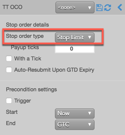
Note: For a TT Stop child order submitted as part of a TT OCO parent order, you can override/select the TIF of the native child order submitted by the TT Stop. When TT Stop is selected, the TIF selector is displayed in the flyout.
The following TIFs can be selected if natively supported by the exchange:
In the following example, a TT OCO is submitted as a Buy order using the default configuration:
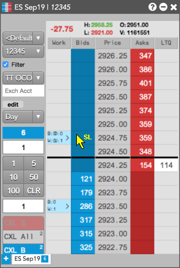
The Audit Trail shows that the Stop Limit order (protective Stop order) was actually submitted at 2925.00, which is one tick away based on the Payup setting. When the Stop Limit was triggered, the order was filled at 2924.75 and the first Limit order (profit order) was canceled. The parent TT OCO order was filled at 2924.75.
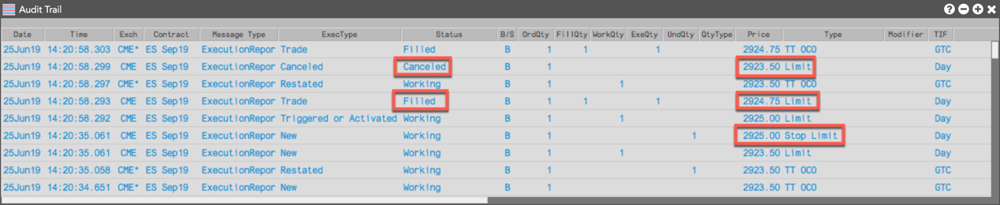
For this next configuration, the TT OCO is configured to submit a Stop Market order. However, the Payup setting is ignored for Market orders.
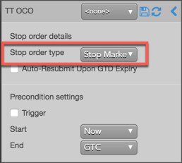
The following example shows a TT OCO submitted as a Buy order using this configuration:
The Audit Trail shows that the Stop Market order (protective Stop order) was triggered and filled at the market price of 2925.25 and the first Limit order (profit order) was canceled. The parent TT OCO order is filled at 2925.25.
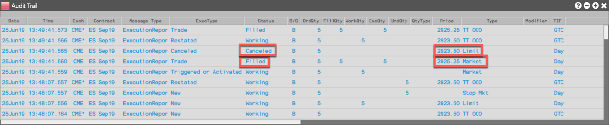
The TT OCO can be configured to execute the Stop child order at a specific price level. You can set the child order based on market conditions (WAT) or a set number of ticks from the market (Payup). In this example, we'll use a Payup of "-3".
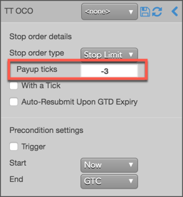
To submit the TT OCO order:
The Stop Limit order is triggered at 2952.75 and a child Limit order is submitted at 2953.50, three ticks away from the market based on the Payup setting of "-3".
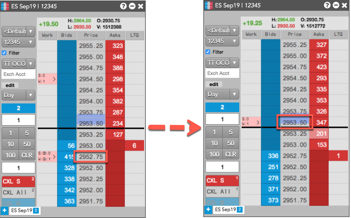
The Audit Trail shows that the child Limit order was activated and filled at 2953.50, and the profit order of 2954.50 was canceled. The parent TT OCO order is filled at 2953.50.
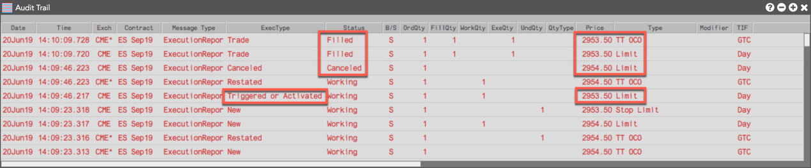
{% include tto-wat-params.html %}You can also configure at what price the TT OCO parent order is triggered. If a trigger price is set for the parent TT OCO, it's submitted 'on hold' until the price conditions are met. When the TT OCO is triggered, it submits a child profit order and Stop order at the prices selected in the market. TT OCO supports the following triggers:
The following trigger price types are supported:
In this example, the TT OCO order trigger is a "Stop" and the trigger price is set to "2954.50". The trigger price is evaluated based on the price type of "LTP".
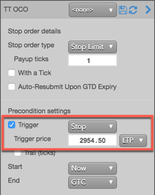
The TT OCO with the trigger price preconditions behaves in the market as follows:
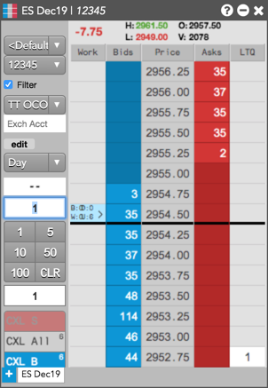
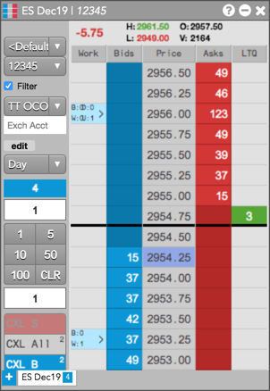
The Audit Trail shows that the Stop Limit was triggered and filled at 2956.25 and that the initial Limit order at 2953.25 was canceled. The TT OCO is filled at 2956.25.
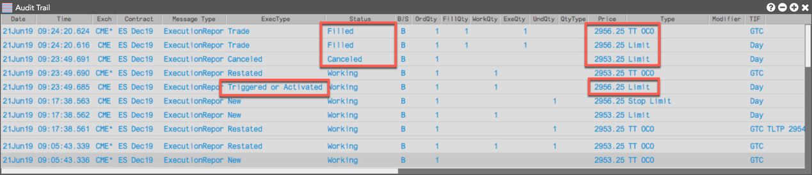
You can also trigger a TT OCO using a trigger price that dynamically adjusts relative to the market. Using the "Trail (ticks" option, you can set how many ticks away from a specified price type to trigger an OCO.
The Trail (ticks) setting adjusts the trigger price based on which trigger is used:
In this example, the TT OCO order trigger is a "Stop" and Trail (ticks) is set to "3". The trigger price is evaluated based on the price type of "LTP". When submitted, the TT OCO trigger price will trail LTP by three ticks.

The TT OCO with a trailing price trigger behaves in the market as follows:
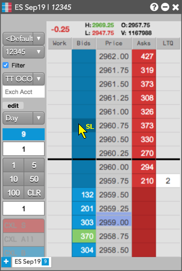
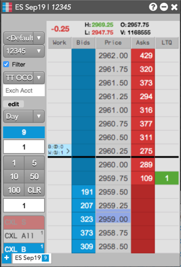
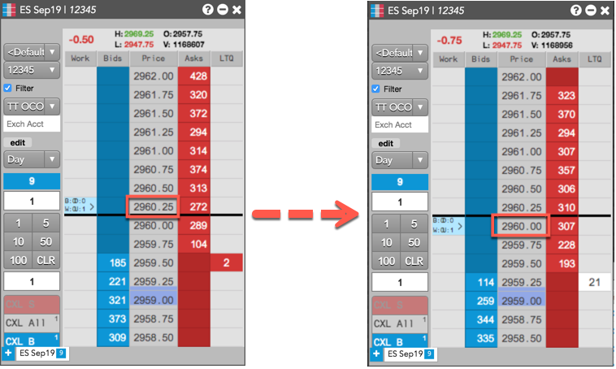
The Audit Trail shows that the TT OCO was triggered at 2959.75 and filled at 2960.75, which was the price of the Stop Limit (protective) order. The Limit (profit) order at 2958.75 was canceled.
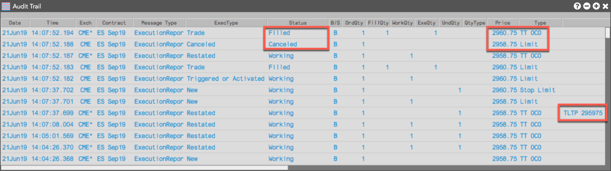
{% comment %}You can customize when a TT OCO order starts and ends using the "Start" and "End" settings.
Note: If you set both a trigger and a future start time, the start time takes precedence. When the specified start time is reached, the TT OCO parent order begins working and evaluates the trigger conditions.
To set when to start and end a TT OCO parent order:
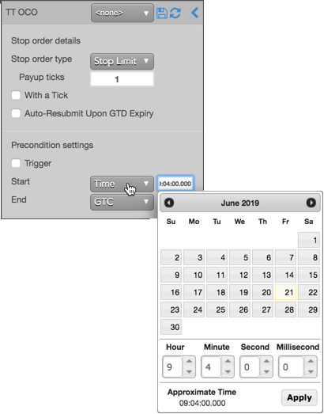
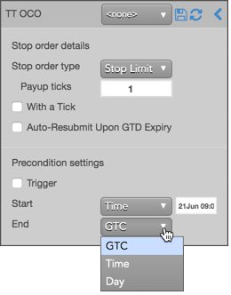